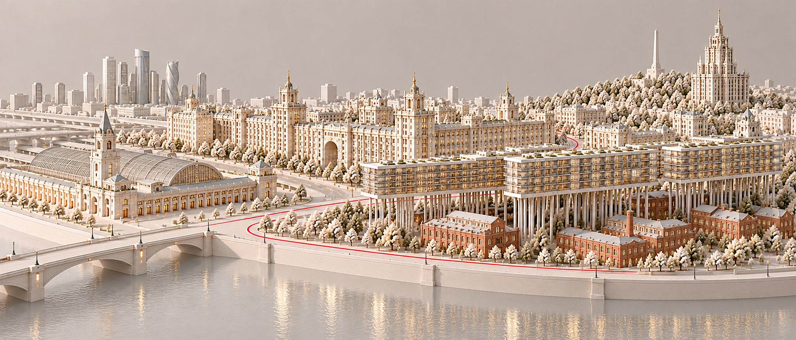
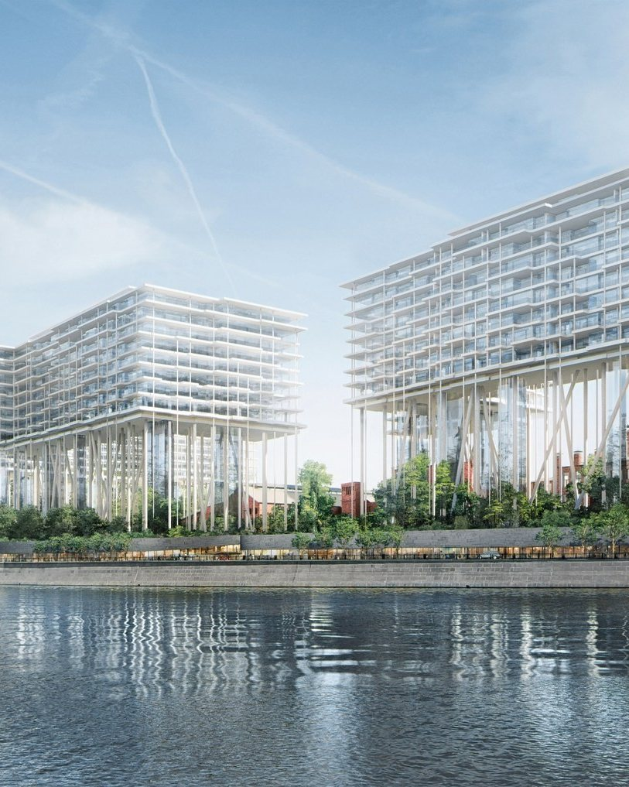
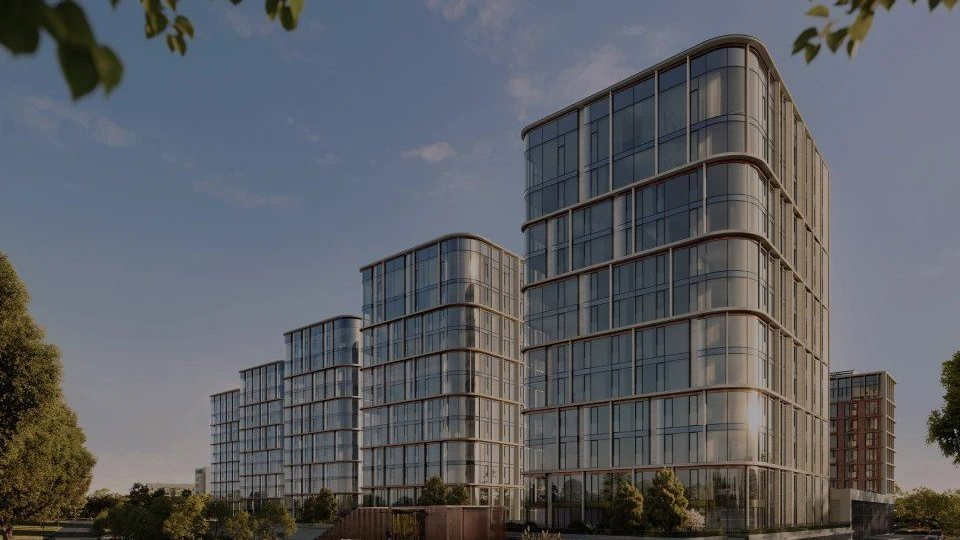

Район · перепроверено 10 октября 2026
Дорогомилово
На заметку: в Дорогомилове один и тот же квартал продают по двум ценам: в Victory Park застройщик просит 1,85 млн за метр, собственники — 1,23. А в Vesper Кутузовский девять лотов застройщика из десяти висят дольше полугода. Новостройки района, по bnMAP.pro, за год к июню не подорожали.

Откуда цифры
Один район, пять калькуляторов
| Кто считал | Что считал | Цена метра |
|---|---|---|
| «Инком-Недвижимость», сентябрь 2026 | всё вторичное жильё района | 480 тыс ₽ |
| bnMAP.pro, сентябрь 2026 | все новостройки района | 1,5 млн ₽ |
| Kalinka, июнь 2026 | дорогая вторичка: квартиры и апартаменты | 1,3 млн ₽ |
| «Метриум», II квартал 2026 | элитные новостройки | 1,79 млн ₽ |
| NOTA, ЦИАН 10 октября 2026 | 6 домов разбора: вторичка и лоты застройщиков | вторичка — 1,17 млн ₽, у застройщиков — 1,57 млн ₽ |
По bnMAP.pro, к концу июня новостройки Дорогомилова за год не подорожали — 0,0 %, тогда как на Пресне за тот же срок +25 %. Это цены предложения, не сделок. Нашу цифру мы считаем по шести домам разбора, а не по всему району.
Красная линия
Семь вещей, на которые здесь стоит смотреть
| Что | Как здесь |
|---|---|
| Место | Кутузовский проспект у реки, Поклонная гора и тупики у Киевского вокзала. Медиана у застройщиков: у Кутузовского — 1,54 млн, у Поклонной — 1,85. |
| Вода | Река — в 250–280 метрах от трёх домов у Кутузовского. Колонны Бадаевского в 35 метров оставляют обзор между пивоварней и рекой. |
| Дом | Пивоварня 1875 года, сталинские дома проспекта, башня в духе ар-деко на Поклонной и новые кварталы с ключами до 2028 года. |
| Метро | От Бадаевского, Кутузовского XII и Vesper до метро больше 15 минут пешком — минус в паспорте (проверка 03). |
| Паркинг | На квартиру: Vesper — 1,53 места, Victory Park — 1,48, Бадаевский — 1,30. На апартамент: Поклонная 9 — 0,55, D’oro Mille — 0,38. |
| Витрина | В Vesper 70 лотов застройщика из 80 висят дольше полугода, медиана 374 дня. На вторичке Кутузовского XII — 261 день. |
| Сценарий | Семья с машиной: школа № 67 — в 2–5 минутах пешком от пяти домов из шести. Для жизни без машины — не тот адрес. |

Дом месяца
Victory Park Residences
Восемь корпусов Сергея Скуратова у Парка Победы, 482 квартиры и 712 машиномест. Квартал сдан, а застройщик ещё продаёт 26 лотов: двухкомнатная — от 124,5 млн. У собственников 73 объявления, двухкомнатная — от 70 млн. В сданном доме начинать стоит со вторички, а не с прайса.
Скуратов развёл материалы по частям ансамбля: тёплый доломит — на фасадах, медь — на трёх домах второй линии и торговом центре. Так один квартал читается как несколько домов.

Без отметки
Три места, где район не проходит собственную линию
Бадаевский
154 лота у застройщика, медиана 1,53 млн. По нашему паспорту — без отметки: пять минусов, в том числе перенос сроков, 871 квартира и 1,3 машиноместа на каждую.
Поклонная 9
Апартаменты: 51 объявление из 53. 521 апартамент на 288 машиномест, по паспорту — без отметки. Метр 1,06 млн — ниже квартир района, и это плата за статус.
D’oro Mille
Срок перенесли со II на IV квартал 2026 года. 156 апартаментов на 60 машиномест. На ЦИАН — одно объявление агента, лотов застройщика на витрине нет.
Чего мы не нашли
Цен сделок по району нет в открытом доступе — только цены предложения. Медианы мы посчитали сами по объявлениям ЦИАН. Лоты застройщика D’oro Mille на ЦИАН не видны — цены приходится спрашивать.
Обложка сгенерирована для NOTA. Источники: «Инком-Недвижимость», bnMAP.pro, «Метриум», Kalinka — в пересказе РБК Недвижимости (июнь — сентябрь 2026); ЦИАН — выгрузка NOTA 10 октября 2026; база NOTA — паспорта домов; novostroy-m.ru, elitnoe.ru и сайты застройщиков — характеристики домов.